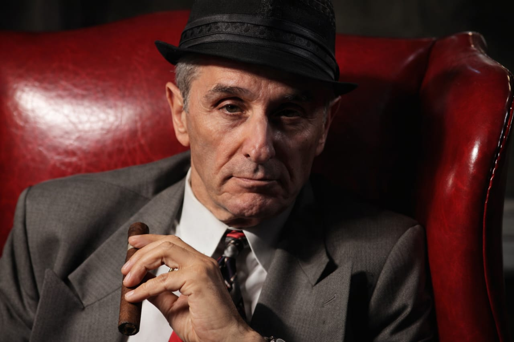
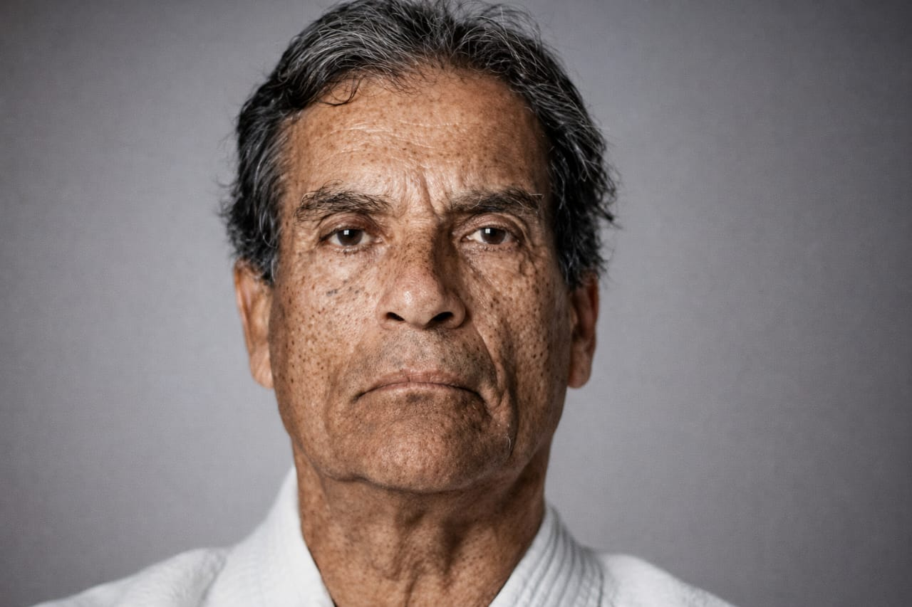

De 1993 à aujourd'hui — l'ascension d'une légende mondiale
Chronologie
1993
L'UFC est fondée par Art Davie et Rorion Gracie avec un objectif clair : déterminer quelle discipline de combat est la plus efficace. Le premier événement, UFC 1, se tient le 12 novembre 1993 à Denver, Colorado.
1993 – 2000
Qualifié de « human cockfighting » par ses détracteurs, l'UFC fait face à des interdictions dans de nombreux États américains. L'organisation traverse une période difficile malgré un public grandissant.
2001
Dana White et les frères Fertitta rachètent l'UFC pour 2 millions de dollars. Des règles unifiées sont adoptées pour légitimer le sport auprès des commissions athlétiques.
2005
L'émission de téléréalité explose les audiences. Forrest Griffin vs Stephan Bonnar devient l'un des combats les plus importants de l'histoire du MMA et propulse l'UFC dans la culture populaire.
2016
WME-IMG rachète l'UFC pour 4 milliards de dollars, établissant un record pour la valorisation d'une organisation sportive. L'UFC devient une marque mondiale de premier plan.
Aujourd'hui
Présente dans plus de 175 pays, l'UFC est diffusée dans des centaines de millions de foyers. Ses événements remplissent les plus grandes arènes du monde et génèrent des milliards de revenus annuels.
Les pionniers
Deux visions complémentaires, une même ambition : créer le tournoi de combat ultime et répondre à la question que tout passionné se posait — quelle discipline est la plus efficace ?

Consultant en marketing et fan de sports de combat, Art Davie a eu la vision originale du tournoi. Il a co-créé le concept avec Rorion Gracie et organisé les premiers événements UFC dans les années 90.

Maître du Jiu-Jitsu brésilien et fils aîné d'Hélio Gracie, il a contribué à démontrer l'efficacité du grappling en combat réel. La famille Gracie reste l'une des plus influentes dans le monde des arts martiaux.